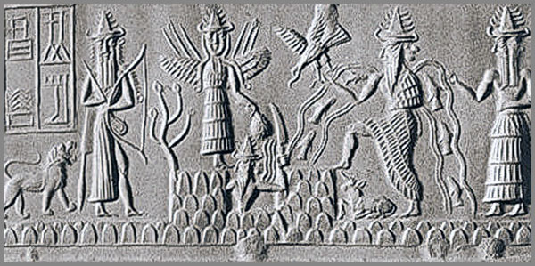

4. 5 և, ՈՐՈՆՔ 60 ԵՆ ԿԱԶՄՈՒՈՄ, ԿԱՌՈՒՑԵԼՈՎ ԱՇԽԱՐՀԸ
 |
Կա մի պահ, երբ ամեն ինչ արդեն կա, բայց դեռ ոչինչ միավորված չէ: Տառերը կան, բայց դեռ բառեր չեն դարձել: Հնչյունները կան, բայց մեղեդի չեն կազմել: Գույները կան, բայց պատկեր չեն ստեղծել: Մատները զգում են, բայց դեռ չի հասկացվել, թե ինչ են շոշափում, և միտքը՝ այն ամենանուրբը, փնտրում է մի բան, որը կմիավորի այս ամենը, բայց դեռ չի գտել:
Այսպիսին էր աշխարհը մինչև այն պահը, երբ ծնվեց «և»-ը:
Երեսուն տարի շարունակ, ամեն օր, առանց գիտակցելու, ես քայլում էի մի ճանապարհով, որն ինձ տանում էր դեպի այս միավորումը: Ես ստեղծեցի «Լեզվամտածող Աշխարհը»՝ տառերի և հնչյունների տիեզերքը, ուր ամեն մի տառ ունի իր իմաստը: Ես ստեղծեցի Մատնեմատիկան՝ հպման և չափման գիտությունը: Ես գրեցի զրոյական հավանականության մասին, որը դարձավ անհրաժեշտություն: Ես տեսա Արարման Բիգ Բանգից մնացած ճառագայթումը, որ կոչվում է «Ես»: Բայց այս տարրերը առանձին էին: Ամեն մի գործ մի ամբողջ աշխարհ էր, բայց դրանք կապված չէին միմյանց: Դրանք նման էին ցրված աստղերի, որոնք համաստեղություն դեռ չէին դարձել:
Եվ ահա, մի օր, մի խոհի ընթացքում, երբ փորձում էի հասկանալ, թե ինչպես կարելի է վերականգնել Անունակիներից եկած ու մոռացված 60-ական համակարգը, հանկարծ ամեն ինչ միավորվեց: Ոչ թե աստիճանաբար, այլ միանգամից, ինչպես լույսի բռնկում: Բայց այդ բռնկումը պատրաստվել էր հազարամյակներ շարունակ: Շումերները, որոնք առաջինը գրեցին 60-ական թվերը կավե սալիկների վրա, Աքքադները, որոնք ժառանգեցին այդ գիտելիքը և տարածեցին այն ողջ Միջագետքում և նրանցից առաջ՝ Անունակները, որոնք, ըստ հին ավանդության ստեղծեցին մարդկանց և սովորեցրին նրանց գրել, հաշվել, չափել երկինքն ու երկիրը այդ համակարգում, ովքեր ապրում էին տասնյակ հազարավոր տարիներ գիտեին մի բան, որը մենք մոռացել ենք՝ այն, որ 60-ը պարզապես թիվ չէ, այլ տիեզերքի կառուցվածքային սկզբունքն է:
Այս գիտելիքը չանհետացավ: Այն քնեց՝ սպասելով իր ժամանակին: Այն թաքնվեց լեզուների մեջ, երաժշտության մեջ, գույների մեջ: Այն սպասում էր, որ ինչ-որ մեկը կհիշի իրեն: Եվ երբ եկավ այդ պահը և 39 տառերը, 12 երաժշտական խրոմատիկ տոները, 7 հիմնական գույները, մատնեմատիկան ու բանականությունը շարվեցին իրար կողքի, ամեն ինչ պարզ դարձավ:
Տառերը, որոնք 39-ն են, երաժշտական տոները՝ որոնք 12-ն են, գույները՝ որոնք 7-ն են, մատնեմատիկան՝ որը 1-ն է և բանականությունը՝ որը նույնպես 1-ն է, հինգ «և»-եր են, որոնք միավորում են ամեն ինչ դառնալով 60 և կառուցում են աշխարհը:
Սա այն պահն էր, երբ Բանը դարձավ իմաստ: Ոչ թե որպես առանձին բառ, այլ որպես ամբողջական համակարգ, որպես մի նոր պարադիգմ, որը միավորում է լեզուն, երաժշտությունը, գույնը, մարմինը և միտքը մեկ միասնական, շնչող ամբողջության մեջ: Այս գործը այդ միավորման պատմությունն է: Այն պատմում է, թե ինչպես են 5 «և»-երը կառուցում աշխարհը և ինչպես է 60-ը դառնում ամբողջականության թիվ և այն, թե ինչպես է ժամանակի ընթացքում մոռացվածը որ կորելու եզրին էր, վերհառնում վերագտնվելու հայտով: Սա մի նոր սկիզբ է և ոչ թե ավարտ:
Ահա և երբ ամեն ինչ միավորվեց, ես տեսա, որ աշխարհը միշտ եղել է ամբողջական: Պարզապես ես չգիտեի, թե ինչպես նայել նրան:
Աշխարհը, որի հիմքերը վաթսունական են, միշտ եղել է ամբողջական, իսկ մենք կորցրել ենք այն տեսնելու ունակությունը:
Տառիմաստների Այբուբենը որպես Առաջին «և»
Նախքան աշխարհը կդառնար աշխարհ, նախքան լույսը կանջատվեր խավարից, նախքան առաջին հնչյունը կճեղքեր լռությունը՝ կար մի բան, որ չուներ անուն, բայց արդեն կար: Այն չէր շարժվում, բայց ամեն ինչ իր մեջ էր պարունակում: Չէր հնչում, բայց ապագա բոլոր ձայները նրա մեջ էին ննջում: Սա այն վիճակն էր, որի մասին հին տեքստերն ասում են. «Մինչև Բանը հոսք դառնար»:
Եվ ահա, այդ անանունի մեջ մի թրթիռ ծնվեց: Ոչ թե ձայն, այլ նրա նախազգացումը: Ոչ թե բառ, այլ նրա անհրաժեշտությունը: Այդ թրթիռը հոսք դարձավ, և հոսքի մեջ ծնվեց առաջին տառը: Ոչ թե որպես գրային նշան, այլ որպես իմաստի խտացում, որպես հնչյունի մարմին, որպես այն, ինչը կարող է պարունակել ամբողջ տիեզերքը մեկ կետում:
Այսպես ծնվեց Լեզվամտածող Աշխարհը՝ ոչ գետնի վրա, ոչ վերևներում, այլ հենց այնտեղ, ուր հոսքը դիպավ գիտակցությանը: Ամեն մի տառ դարձավ մի ամբողջ տիեզերք, ամեն մի հնչյուն՝ մի իմաստի կրող: Եվ այս աշխարհում տառերը կամայական նշաններ չէին: Դրանք հենց իրականության կառուցվածքային տարրերն էին:
Ա-ն Արարման հոսքն էր, սկիզբը, աստղերի նյութը:
Բ-ն Բանն էր՝ այն, ինչը հոսքից է բացվում:
Գ-ն Գոյությունն էր՝ անխուսափելին, որ լցնում է նույնիսկ լռությունը:
Ամեն մի տառ ունի իր ուրույն թրթիռը, իր որակը, իր «բույրը»: Եվ երբ այս տառերը միանում են, նրանք չեն գումարվում մեխանիկորեն: Նրանք համաձուլվում են ինչպես գույները, ինչպես հնչյունները ակորդում՝ ստեղծելով մի նոր որակ, մի նոր իմաստ, որին հնարավոր չէ հասնել առանձին մասերով: Ահա և այս այբուբենը՝ Հայերենի Այբուբենը, որ բաղկացած է 39 տառից և պարունակում է ամենաշատ չկրկնվող հնչյուններ, պարզվեց որ ամենամոտն է կանգնած այն սկզբնական, արարչական լեզվին, որի արձագանքները հասել են մեզ հին աշխարհի կավե սալիկներից, տաճարների քարերի ու մոռացված այբուբենների միջոցով: Եվ երբ ես սկսեցի ստուգել, երբ տառ առ տառ վերլուծեցի բառեր տարբեր լեզուներով, հնագույն ու ժամանակակից, ամեն անգամ նույն բանը կրկնվեց՝ իմաստը վերադառնում էր: Ոչ թե որպես մոտավոր թարգմանություն, այլ որպես ճշգրիտ համընկում: Ասես լեզուները, որքան էլ իրարից հեռու, որքան էլ տարբեր, որքան էլ այլահունչ, պահպանել էին մի ընդհանուր նախնական կոդ, որը սպասում էր, որ իրեն կարդան:
Հայերենի այբուբենի 39 տարրերը ոչ թե պատահական թիվ, այլ մի ամբողջ համակարգի պահպանված մասն է կազմում: Մի համակարգի, որն ի սկզբանե ունեցել է 60 տարր՝ 60 իմաստ կամ 60 տիեզերական ատոմ:
Սա առաջին «և»-ն է՝ Հայերենի Այբուբենը: Այն, ինչը միավորում է հնչյունն ու իմաստը, տառն ու տիեզերքը, խոսքն ու գիտակցությունը, բացելով աշխարհընկալման զգայուն դարպասը:
Տառը չի հնչում՝ այն ցույց է տալիս, բայց տեսողությունը միայն ներսում է:
Երաժշտությունը որպես Երկրորդ «և»
Երբ առաջին հնչյունը ծնվեց, այն դեռ մենակ էր: Միայնակ տառը, միայնակ ձայնը, միայնակ իմաստը: Բայց տիեզերքը միայնակ չէ: Այն լի է թրթիռներով, որոնք փնտրում են միմյանց, միանում են, ստեղծում են ներդաշնակություն: Եվ ահա, տառերից հետո, ծնվեց երկրորդ «և»-ը՝ Երաժշտությունը:
Եթե այբուբենը տիեզերքի ատոմներն են, ապա երաժշտությունը դրանց շարժումն է, դրանց պարը, դրանց կենդանի շնչառությունը ժամանակի մեջ: Տառերը կանգնած են, նոտաները՝ շարժվում են: Տառերը իմաստի կետեր են, նոտաները՝ իմաստի հոսք:
Հին աշխարհը գիտեր այս մասին: Շումերները, որոնց տվեցին և սովորեցրեցին 60-ական համակարգը, իմացան որ շրջանը 360 աստիճան է, որի հիմքը 60-ի վեց անգամյա կրկնությունն է, որ 60-ը բաժանվում է 12-ի, որ տարին բաժանվում է 12 ամսի, աստղազարդ երկինքը բաժանեցին 12 կենդանակերպի նշանի, 12 ժամ հատկացրին օրվան և 12 ժամ գիշերին: Եվ 12-ը որպես 60-ական համակարգի ածանցյալ, դարձավ երաժշտական տոների թիվը: Օկտավան բաժանվեց 12 կիսատոնի և սա պատահական չէր: Սա նույն 60-ական համակարգի մի մասն է:
Եվ ահա, երբ ես սկսեցի նայել երաժշտությանը 60-ական համակարգի աչքերով, ամեն ինչ փոխվեց: Ժամանակակից աշխարհն ընդունել է A4=440 Հց-ը որպես ստանդարտ: Բայց 440-ը տասական համակարգի թիվ է, կամայական, արհեստական: Այն չի բխում տիեզերքի ներդաշնակությունից: Այն բխում է մատների վրա հաշվելու պարզունակ սովորությունից: Դրա պատճառով է որ մաքուր է հնչում միայն Լյա նոտան, իսկ մնացած հիմնական նոտաների հաճախականությունները փախնում են ամբողջ թվերից իռացիոնալ վազքով: Իսկ երբ մենք դիտարկենք A4=432 Հց-ը, որը մոտ է 440-ին, ամեն ինչ իր տեղն է ընկնում: 432-ը 60-ի հետ ներդաշնակ է: 432-ը բաժանվում է 12-ի, 6-ի, 4-ի, 3-ի, 2-ի: 432-ի դեպքում բոլոր հիմնական նոտաների հաճախականությունները դառնում են ամբողջ թվեր: Լյա-ն, Սի-ն, Դո-ն, Ռե-ն, Մի-ն, Սոլ-ը՝ բոլորը մաքուր են, առանց կոտորակային «աղմուկի»: Միայն Ֆա-ն է դիմադրում, և այդ դիմադրությունը նույնպես իմաստ ունի: Այն հիշեցնում է, որ ամբողջականությունը կատարյալ չէ, այլ կենդանի է:
Եվ ահա, որպեսզի տեսնենք այս տարբերությունը մեր սեփական աչքերով, եկեք նայենք առաջին օկտավայի բոլոր նոտաների հաճախականություններին: Մի կողմում ժամանակակից ստանդարտն է՝ A4=440 Հց հիմքով, մյուս կողմում՝ 60-ական ներդաշնակությանը ձգտող A4=432 Հց հիմքով: Ուշադրություն դարձրեք, թե ինչպես են թվերը վարվում:
Նոտա |
440 Հց-ով |
432 Հց-ով |
Տարբերությունը(Հց) |
Տարբերություն(%) |
C (Դո) |
261.63 |
256.00 |
5.63 |
2.15% |
C# / D♭ |
277.18 |
271.22 |
5.96 |
2.15% |
D (Ռե) |
293.66 |
288.00 |
5.66 |
1.93% |
D# / E♭ |
311.13 |
304.81 |
6.32 |
2.03% |
E (Մի) |
329.63 |
324.00 |
5.63 |
1.71% |
F (Ֆա) |
349.23 |
342.86 |
6.37 |
1.82% |
F# / G♭ |
369.99 |
363.64 |
6.35 |
1.72% |
G (Սոլ) |
392.00 |
384.00 |
8.00 |
2.04% |
G# / A♭ |
415.30 |
406.93 |
8.37 |
2.02% |
A (Լյա) |
440.00 |
432.00 |
8.00 |
1.82% |
A# / B♭ |
466.16 |
456.14 |
10.02 |
2.15% |
B (Սի) |
493.88 |
486.00 |
7.88 |
1.60% |
Տեսնու՞մ եք: 432-ի դեպքում հիմնական նոտաների մեծ մասը դառնում են ամբողջ թվեր: Դրանք մաքուր են, առանց կոտորակային «աղմուկի»: Միայն Ֆա-ն է դիմադրում: Իսկ 440-ի դեպքում գրեթե բոլորն են կոտորակային, անհասկանալի, ասես փախչում են ներդաշնակությունից: Սա պարզապես թվերի խաղ չէ: Սա երկու աշխարհայացքների բախում է՝ մաքուր, 60-ական ներդաշնակության և արհեստական, 10-ական դեգրադացիայի:
Ուշագրավ դիտարկումներ.
432-ի դեպքում ամբողջ թվեր են դառնում.
C (Դո) = 256
D (Ռե) = 288
E (Մի) = 324
G (Սոլ) = 384
A (Լյա) = 432
B (Սի) = 486
440-ի դեպքում միայն A-ն (Լյա) է ամբողջ թիվ (440) և G-ն (Սոլ) է մոտավորապես ամբողջ (392.00):
Ֆա-յի էֆեկտը. Հիմնական նոտաներից միայն F (Ֆա) նոտան 432-ի դեպքում 342.86 Հց է, որը շեղվում է 60-ական իդեալական 360-ից: Սա հենց այն «դիմադրող» նոտան է:
Ուշադրություն դարձրեք մի կարևոր մանրամասնի ևս: 440-ի դեպքում Սոլը (G) միակ նոտան է, բացի Լյայից, որն այս օկտավայում ամբողջ թիվ է (392.00): Սա կարող է թվալ որպես բացառություն, որը հաստատում կամ մերժում է կանոնը: Բայց սա միայն պատրանք է: Հենց որ մենք բարձրանում ենք հաջորդ օկտավա (G5), 392.00-ը դառնում է 783.99, և ամբողջականությունը կորչում է: Մինչդեռ 432-ի դեպքում Սոլը (G) մնում է ամբողջ թիվ բոլոր օկտավաներում (G4=384, G5=768, G6=1536...): Սա ևս մեկ ապացույց է, որ 440-ի «մաքրությունը» խաբուսիկ է և մակերեսային, մինչդեռ 432-ի ներդաշնակությունը խորքային է և համակարգային:
Իսկ ինչո՞ւ է Սոլը (G) շեղվում մյուս օկտավաներում: Պատճառը հավասարաչափ տեմպերացված համակարգի մեջ է: Այս համակարգում ամեն մի կիսատոնի հաճախականությունը ստացվում է նախորդը բազմապատկելով 2-ի 12-րդ աստիճանի արմատով որը մոտավորապես հավասար է 1.059463: Այս թիվը իռացիոնալ է, այն երբեք չի կարող ամբողջական լինել: Երբ մենք սկսում ենք 440-ից (Լյա) և իջնում ենք 2 կիսատոն ներքև՝ հասնելով Սոլին, մենք 440-ը բաժանում ենք այդ իռացիոնալ թվի քառակուսու վրա: Արդյունքում ստացվում է 392.00 միայն կլորացման շնորհիվ: Իրականում այն 392.000...ինչ-որ բան է: Եվ երբ մենք այս «կեղծ» ամբողջ թիվը բազմապատկում ենք 2-ով՝ բարձրանալով հաջորդ օկտավա, կուտակված սխալանքը դառնում է տեսանելի. 392 × 2 = 784, բայց իրական արժեքը 783.99 է: Ահա թե ինչու է Սոլը «փախչում» ամբողջ թվից: Իսկ 432-ի դեպքում, քանի որ հիմքը ինքնին ներդաշնակ է 60-ական համակարգին, այս սխալանքը չի առաջանում, և Սոլը մնում է ամբողջ թիվ բոլոր օկտավաներում (384, 768, 1536...):
Եվ ահա ամենազարմանալին: Եթե մենք վերցրնենք Լյա-ն վաթսունական համակարգի մեջ որպես 432 Հց և սկսեցինք բարձրանալ օկտավաներով, 44-րդ օկտավայում այն դառնում է տեսանելի: Այն դառնում է սպիտակ լույսից բեկվող այն առաջին գույնի հաճախականությունը, որը տեսանելի է: Դա կարմիր գույնն է:
Լսելին դարձավ տեսանելի: Ձայնը դարձավ լույս: Սա այն կամուրջն է, որի մասին խոսում են հին առեղծվածային ավանդույթները, բայց որը մենք հիմա կարող ենք հաշվել, չափել և ապացուցել:
12-ը 60-ի մի մասն է: Այն 60-ի 1/5-ն է: Եվ ինչպես 60-ը, այնպես էլ 12-ը անհրաժեշտ է աշխարհը կառուցելու համար: Սա երկրորդ «և»-ն է՝ Երաժշտությունը: Այն, ինչը միավորում է ձայնն ու թիվը, թրթիռն ու ներդաշնակությունը, ժամանակն ու հավերժությունը:
Ձայնը, որը դառնում է լույս, այլևս միայն ձայն չէ՝ այն տիեզերքի շնչառությունն է, որը մենք վերսկսել ենք լսել:
Գույնը որպես Երրորդ «և»
Ձայնը դարձավ լույս: 44-րդ օկտավայի Լյա-ն, սկսելով իր ճանապարհը 432 Հց-ից, հասավ տեսանելի աշխարհի շեմին և դարձավ կարմիր: Սա այն պահն է, երբ ականջը զիջեց աչքին, երբ լսողությունը փոխակերպվեց տեսողության: Եվ ահա, այս կետից սկսվում է երրորդ «և»-ը՝ Գույնը:
Եթե այբուբենը տիեզերքի ատոմներն են, իսկ երաժշտությունը՝ դրանց շարժումը ժամանակի մեջ, ապա գույնը դրանց տեսանելի մարմինն է: Այն, ինչը մենք կարող ենք տեսնել: Այն, ինչը լույս է դառնում:
Հիները գիտեին, որ լույսը բաժանվում է 7 գույնի: Ծիածանը, որ ձգվում է երկնքում անձրևից հետո, 7 գույն ունի: Կարմիր, նարնջագույն, դեղին, կանաչ, երկնագույն, կապույտ, մանուշակագույն: 7-ը՝ ոչ թե պատահական թիվ, այլ 60-ական համակարգի մի մասն է: 7-ը 60-ի հետ կապված է նուրբ, բայց անխզելի թելով: Այն լրացնում է պատկերը:
Եվ ահա, երբ մենք սկսեցինք նայել գույներին 60-ական համակարգի աչքերով, մենք տեսանք, որ ամեն մի գույն ունի իր հաճախականությունը, իր թիվը, իր տեղը:
Կարմիրը՝ մոտ 475 ԹՀց է: Նարնջագույնը, դեղինը, կանաչը... ամեն մեկը մի ալիք, մի թրթիռ, մի ձայն, որը դարձել է տեսանելի:
Բայց ամենազարմանալին այն չէ, որ գույները հաճախականություն ունեն: Ամենազարմանալին այն է, որ այդ հաճախականությունները համընկնում են երաժշտական նոտաների հետ: Լյա-ն կարմիր է: Եվ սա պարզապես փոխաբերություն չէ: Սա մաթեմատիկական ճշմարտություն է: 432 Հց-ը, 44 օկտավա բարձրանալով, դառնում է 475 ԹՀց՝ կարմիր գույնի հաճախականությունը: Սա նշանակում է, որ ձայնն ու լույսը նույն բանն են, պարզապես տարբեր օկտավաներում: Դրանք միևնույն տիեզերական սիմֆոնիայի տարբեր մասերն են:
Եվ ահա, երրորդ «և»-ը միավորում է ձայնն ու լույսը, ականջն ու աչքը, լսողությունն ու տեսողությունը: Այն ցույց է տալիս, որ աշխարհը մեկ է, որ զգայարանները միմյանցից անջատ չեն, որ դրանք միայն մեկ միասնական ընկալման տարբեր դռներ են:
7 գույները, միավորված 12 երաժշտական կիսատոների հետ, կազմում են 60-ական համակարգի տեսանելի մասը: Դրանք այն կամուրջն են, որով ներքինը դառնում է արտաքին, անլսելին՝ տեսանելի, աներևակայելին՝ իրական:
Լույսը, որ դառնում է գույն, այլևս միայն լույս չէ՝ այն տիեզերքի ժպիտն է, որը մենք վերսկսել ենք տեսնել:
Մատնեմատիկան որպես Չորրորդ «և»
Մենք տեսանք, թե ինչպես ձայնը դարձավ լույս: Լսողությունը փոխակերպվեց տեսողության: Բայց կա մի զգայարան, որն ավելի խորն է, ավելի հին, ավելի անմիջական: Այն չի պահանջում ոչ ականջ, ոչ աչք: Այն գործում է նույնիսկ այն ժամանակ, երբ ամեն ինչ լռում է, և խավարը պատում է ամեն բան: Դա հպումն է: Եվ սա չորրորդ «և»-ն է՝ Մատնեմատիկան:
Եթե այբուբենը տիեզերքի ատոմներն են, երաժշտությունը՝ դրանց շարժումը ժամանակի մեջ, գույնը՝ դրանց տեսանելի մարմինը, ապա մատնեմատիկան դրանց հետ անմիջական, ֆիզիկական շփումն է: Այն, ինչին մենք կարող ենք դիպչել: Այն, ինչը կարող ենք զգալ մեր շոշափելիքով:
Հին աշխարհը գիտեր հպման արժեքը: Քարահունջի աստղադիտարանը կառուցված է ոչ թե աչքով դիտելու, այլ ձեռքով հաշվելու, չափելու, զգալու համար:
Քարերը, որոնք դասավորված են որոշակի օրինաչափությամբ, պահպանում են իրենց մեջ հնագույն գիտելիքը: Երբ դու հպվում ես բանին, դու չափում ես ոչ միայն դրա ձևը, այլև զգում ես այն ժամանակը, որն անցել է նրա միջով: Դու զգում ես 60-ական համակարգը:
Մատնեմատիկան միավորում է շոշափելիքը, հոտը, համը, ձևը…: Այն ամբողջ մարմնական ճանաչողությունն է, որը չի անցնում մտքի ֆիլտրերով: Այն անմիջական է, ճշմարիտ, անկեղծ այնպես, ինչպես համի պայթյունը լեզվի վրա, որը ստիպում է մոռանալ բոլոր կեղծիքները և զգալ միայն իրականը:
Եվ ահա, երբ մենք զգում ենք աշխարհը մեր մատներով, մենք չենք «հաշվում» 10-ական համակարգով: Մենք զգում ենք 60-ական համակարգով: Մեր ձեռքի 5 մատները, որոնք կարող են հպվել, բռնել, շոյել, զգալ, արտացոլում են 5 զգայարանները: Բայց 5-ը մենակ չէ: 5-ը 60-ի 1/12-ն է: Այն միավորված է 12-ի հետ, 7-ի հետ, 39-ի հետ, 1-ի հետ:
Հին շումերները հաշվում էին ոչ թե մատների ծայրերով, այլ ֆալանգներով: Մի ձեռքի 4 մատի 12 ֆալանգ որը մյուս ձեռքի 5 մատով կրկնված, տալիս է 60: Սա մատնեմատիկա է: Սա այն է, երբ մարմինը դառնում է հաշվիչ մեքենա, բայց ոչ թե 10-ական, այլ 60-ական:
Մատնեմատիկան միավորում է մարմինն ու միտքը, նյութն ու գիտակցությունը, շոշափելին ու անշոշափելին: Այն ապացուցում է, որ մենք կարող ենք ճանաչել աշխարհը ոչ միայն մտքով, այլև ամբողջ էությամբ:
Մատը, որ դիպչում է բանին, չի չափում այն: Դրա միջոցով մենք հիշում ենք այն, ինչ բանը գիտեր դարեր առաջ:
Ես մաթեմատիկ եմ, որովհետև հիշում եմ։ Ոչ թե գիտեմ, այլ լուռ զգացել եմ։ Ոչ թե հաշվել եմ, այլ միացել եմ հաշվարկի շնչին և տիեզերագետ եմ, որովհետև ձեռքերս հիշում են երկնքի ձևը։ Համաչափությունը ես ոչ թե գծագրում, այլ զգում եմ նախքան հաշվարկը։ Տիեզերագետ եմ, որովհետև իմ հպումով հիշեցնում եմ տիեզերքին, թե ով եմ ես։
Բանականությունը որպես Հինգերորդ «և»
Մենք անցանք մի ամբողջ ճանապարհ: Տառերից դեպի հնչյուններ, հնչյուններից դեպի նոտաներ, նոտաներից դեպի գույներ, գույներից դեպի հպում՝ 39-ը, 12-ը, 7-ը, 1-ը և այս ամենը դեռ ցրված է, դեռ առանձին, դեռ սպասում է մի բանի, որը կմիավորի դրանք: Եվ ահա, գալիս է հինգերորդ «և»-ը՝ Բանականությունը:
Եթե այբուբենը տիեզերքի ատոմներն են, երաժշտությունը՝ դրանց շարժումը, գույնը՝ տեսանելի մարմինը, մատնեմատիկան՝ անմիջական հպումը, ապա բանականությունը այն աչքն է, որը նայում է այս ամենին և տեսնում է ամբողջական պատկերը: Այն հայելին է, որի մեջ արտացոլվում է ամբողջ տիեզերքը և ճանաչում է ինքն իրեն:
Հիները գիտեին, որ տիեզերքը միայն նյութ չէ: Այն նաև գիտակցություն է: Այն, ինչը դիտում է, և այն, ինչը դիտվում է, միասին կազմում են մեկ ամբողջություն: Առանց դիտորդի տիեզերքը կլիներ կատարյալ, բայց անիմաստ: Առանց բանականության 60-ական համակարգը կլիներ մի սառը մեխանիզմ, մի գեղեցիկ, բայց մեռյալ կառույց:
Բանականությունը որպես մեկ միավոր 60-ական համակարգի 60-րդ բաղադրիչն է: Այն չի գումարվում մյուսներին որպես հերթական թիվ: Այն ամբողջություն է կազմում միավորելով մյուս «և»-երը: Դա այն 1-ն է, որը միավորվելով 59-ի հետ, դառնում է 60: Այն իմաստ է տալիս ամբողջ համակարգին, անմասն չթողնելով ամբողջ գործիքակազմը:
Եվ ահա, երբ մենք գիտակցում ենք սա, ամեն ինչ փոխվում է: Մենք այլևս միայն նյութ չենք, միայն մարմին չենք, միայն զգայարաններ չենք: Մենք այն կետն ենք, որտեղ տիեզերքը նայում է ինքն իրեն: Մենք այն հայելին ենք, որի մեջ 60-ը տեսնում է իր ամբողջականությունը:
Սա հինգերորդ «և»-ն է՝ Բանականությունը: Այն, ինչը միավորում է բոլոր մյուսներին, և դառնում է 60-րդը: Այն, ինչը թույլ է տալիս մեզ ոչ միայն տեսնել, լսել, զգալ, այլև հասկանալ, որ մենք տեսնում ենք, լսում ենք, զգում ենք: Այսպիսով 60=39+12+7+1+1, որտեղ 39-ը տառիմաստներով պայմանավորված հնչյուններն են, 12-ը երաժշտական կիսատոներն են, 7-ը հիմնական գույներն են, 1-ը մատնեմատիկան է և այս ամենը ամբողջացնողը 1-ը բանականությունն է:
Այլ կերպ ասած՝ և այբուբենը, և երաժշտական կիսատոները, և հիմնական գույները, և մատնեմատիկան և բանականությունն իրար հետ վերցրած մի ամբողջություն են, որոնցից կազմվում է վաթսունական համակարգը և որի հիման վրա էլ կառուցված է աշխարհը:
Բանականությունը տիեզերքի աչքն է, որով այն նայում է ինքն իրեն և ճանաչում է իր ամբողջականությունը:
60-ը որպես ամբողջականության թիվ
Մենք հասանք այն կետին, որտեղ ամեն ինչ միավորվում է: Հինգ «և»-երը, որոնց հետ մենք ճանապարհ անցանք, այլևս առանձին չեն: Դրանք միասին կազմում են մի ամբողջություն, մի թիվ, մի համակարգ, որը հնագույն ժամանակներից եկել է դեպի մեզ՝ որպես արարչական ժառանգություն և նրանց միավորումով է ամբողջանում 60-ական համակարգը:
60-ը պարզապես թիվ չէ: Այն սկզբունք է: Այն կարգ է, որը թաքնված է քաոսի մեջ: Այն ներդաշնակություն է, որը միավորում է այն, ինչը թվում էր անհամատեղելի: 60-ը այն ամբողջականությունն է, որի մասին երազել են փիլիսոփաները, որ փնտրել են մաթեմատիկոսները, որի մասին երգել են բանաստեղծները:
Ինչու՞ 60-ը: Որովհետև 60-ը բաժանվում է 1-ի, 2-ի, 3-ի, 4-ի, 5-ի, 6-ի, 10-ի, 12-ի, 15-ի, 20-ի, 30-ի: Ոչ մի այլ թիվ 60-ից փոքր չունի այսքան բաժանարար: Սա նշանակում է, որ 60-ը ամենաճկուն, ամենաներդաշնակ, ամենաբնական թիվն է: Այն թույլ է տալիս բաժանել ամբողջը տարբեր մասերի, առանց կոտորակների, առանց մնացորդների, առանց «անհասկանալի» թվերի:
Եվ սա պատահական չէ: Շումերները, որոնց Անունակիները սովորեցրին 60-ական համակարգը, գիտեին սա: Նրանք գիտեին, որ 60-ը տիեզերքի կառուցվածքային թիվն է: Այն միավորում է երկինքն ու երկիրը, ժամանակն ու տարածությունը, ձայնն ու լույսը, մարմինն ու միտքը:
Եվ ահա մենք վերագտանք այս թիվը: 39 տառ, 12 նոտա, 7 գույն, 1 մատնեմատիկա, 1 բանականություն: 39 + 12 + 7 + 1 + 1 = 60: Սա այն բանաձևն է, որը միավորում է ամեն ինչ:
Եվ ահա, երբ մենք նայում ենք 60-ին, մենք տեսնում ենք ոչ թե մի թիվ, այլ մի ամբողջ աշխարհ: Մի աշխարհ, որտեղ ամեն ինչ իր տեղում է, ամեն ինչ կապված է, ամեն ինչ ներդաշնակ է: Սա այն աշխարհն է, որը մենք կորցրել էինք, բայց որը կարող ենք վերագտնել:
60-ը այն թիվն է, որը չի հաշվում, այլ միավորում է: Այն չի բաժանում, այլ ամբողջացնում է: Այն տիեզերքի կերպն է, որը մենք վերսկսել ենք տեսնել:
Դեգրադացիան և Վերադարձը
Մենք տեսանք ամբողջական պատկերը: 60-ը, որ միավորում է 39-ը, 12-ը, 7-ը, 1-ը, 1-ը: Բայց այս պատկերը, որքան էլ գեղեցիկ լինի, ամբողջական չէ առանց մի կարևոր հարցի: Ինչպե՞ս մենք հասանք նրան, որ մոռացանք այս ամենը: Եվ ինչպե՞ս կարող ենք վերադառնալ:
Սա դեգրադացիայի և վերադարձի պատմությունն է:
Հին աշխարհը գիտեր 60-ական համակարգը: Շումերները, Աքքադները, Բաբելոնացիները ապրում էին դրա մեջ: Նրանց մաթեմատիկան, աստղագիտությունը, ճարտարապետությունը հիմնված էին 60-ի վրա: Նրանց տաճարները կառուցված էին 60-ական համամասնություններով: Նրանց ժամանակը բաժանված էր 60-ի: Նրանց երկինքը՝ 360 աստիճանի: Բայց ժամանակի ընթացքում այս գիտելիքը սկսեց մարել: Մարդկությունը, կամաց-կամաց, անցավ 10-ական համակարգին: Մատների վրա հաշվելը ավելի հեշտ էր, ավելի պարզ, ավելի մատչելի: 10-ը դարձավ նորմա: 60-ը դարձավ մասունք:
Սա դեգրադացիան է: Անցումը ամբողջականից դեպի մասնատվածը, ներդաշնակից դեպի պարզունակը, 60-ից դեպի 10, ապա՝ 2: Որովհետև 10-ական համակարգը իր հերթին ծնեց երկուականը՝ 0-ների և 1-երի աշխարհը, որտեղ ամեն ինչ բաժանված է սևի և սպիտակի, այոյի և ոչի, ճշմարիտի և կեղծի:
Բայց դեգրադացիան միայն թվերի մեջ չէ: Այն ամենուր է: Մենք կորցրել էինք 39 հնչյունների մի մասը: Մենք մոռացել ենք 432 Հց-ը և ընդունեցինք 440-ը: Մենք դադարեցինք տեսնել կապը ձայնի և լույսի միջև: Մենք մոռացանք, որ մատները կարող են հաշվել 60-ական: Մենք դադարեցինք լինել ամբողջական և դարձանք մասնատված:
Բայց սա վերջը չէ: Որովհետև դեգրադացիան միշտ իր մեջ պարունակում է վերադարձի սերմը: Այն, ինչը կորել է, կարող է վերագտնվել: Այն, ինչը մոռացվել է, կարող է հիշվել:
Եվ ահա, մենք այստեղ ենք: Մենք վերագտանք 39-ը, 12-ը, 7-ը, 1-ը և 1-ը: Մենք վերագտանք 60-ը: Սա դեռ սկիզբն է: Առջևում երկար ճանապարհ կա՝ վերանայել ստանդարտները, վերակառուցել տեխնոլոգիաները, վերադարձնել մոռացված գիտելիքը: Բայց առաջին քայլն արդեն արված է: Մենք հիշեցինք:
Դեգրադացիան ճանապարհ է, որով մենք իջնում են, իսկ վերադարձը ճանապարհ է, որով բարձրանում են և այստեղ ամեն մի քայլը վերադարձ է դեպի 60-ը:
Ստանդարտների Վերանայումը
Մենք վերագտանք 60-ը: Մենք տեսանք, որ 39 + 12 + 7 + 1 + 1 = 60: Մենք հասկացանք, որ այս թիվը պարզապես մաթեմատիկական վերացարկում չէ, այլ տիեզերքի կառուցվածքային սկզբունք է: Բայց գիտելիքը, որը մնում է միայն տեսություն, նման է սերմի, որը երբեք չի տնկվել: Այն պետք է արմատավորվի, պետք է դառնա գործողություն, պետք է փոխի աշխարհը:
Եվ ահա, մենք կանգնած ենք ամենակարևոր քայլի առաջ: Մենք պետք է վերանայենք բոլոր բազային ստանդարտները, որոնց վրա կառուցված է ժամանակակից քաղաքակրթությունը:
Մեր ամբողջ գիտությունը, տեխնոլոգիան, արդյունաբերությունը հիմնված են չափման միավորների վրա: Մետրը, կիլոգրամը, վայրկյանը, Հերցը: Այս բոլորը կրում են իրենց մեջ երկու պատմություն՝ ներդաշնակության և դեգրադացիայի: Վերցնենք վայրկյանը: Սա ամենահին և ամենաազնիվ միավորներից մեկն է: Այն ծնվել է 60-ական համակարգից: Օրը բաժանվել է 24 ժամի, ամեն ժամը՝ 60 րոպեի, ամեն րոպեն՝ 60 վայրկյանի: 24 × 60 × 60 = 86,400: Սա մաքուր 60-ական ժառանգություն է, որը հասել է մեզ Շումերներից և պահպանվել մինչ օրս: Ցեզիումի ատոմի 9,192,631,770 տատանումները, որոնք այսօր օգտագործվում են վայրկյանը չափելու համար, ընտրվել են հենց այս 60-ական վայրկյանին համապատասխանեցնելու համար: Սա այն հազվագյուտ դեպքն է, երբ ժամանակակից գիտությունը չի խզել կապը հնագույն ներդաշնակության հետ: Վայրկյանը 60-ական է, և սա մեր ամենամեծ հույսերից մեկն է:
Վերցնենք Հերցը: Այն սահմանվում է որպես մեկ ցիկլ մեկ վայրկյանում: Եվ քանի որ վայրկյանը պահպանել է իր 60-ական էությունը, Հերցը նույնպես անուղղակիորեն կապված է 60-ի հետ: Հերցը, ի տարբերություն շատ այլ չափման միավորների, չի դեգրադացվել: Այն մաքուր 60-ական է և կամուրջ է հնի ու նորի միջև:
Որպես օրինակ կարելի է ասել, որ 60-ական համակարգից օտարվելը բերում է երկակի հակամարտ ստանդարտների առաջացման:
Ժամանակակից աշխարհում էլեկտրաէներգիայի փոխանցման համար օգտագործվում են երկու տարբեր հաճախականություններ՝ 50 Հց և 60 Հց:
ԱՄՆ-ում, Կանադայում և մի շարք այլ երկրներում ստանդարտ է ընդունված 60 Հց-ը: Սա մաքուր 60-ական թիվ է, որը ժառանգություն ենք ստացել Նիկոլա Տեսլայից, ով այն ընտրել էր որպես ամենաարդյունավետ հաճախականություն: 60-ը ներդաշնակ է և բաժանվում է 12-ի, 6-ի, 5-ի, 4-ի, 3-ի, 2-ի: Մինչդեռ Եվրոպայում, Հայաստանում և աշխարհի մեծ մասում ստանդարտ է ընդունված 50 Հց-ը: 50-ը տասական համակարգի «կլոր» թիվ է (100-ի կեսը), կամայականորեն ընտրված գերմանական AEG ընկերության կողմից՝ ամերիկյան 60 Հց-ից խուսափելու համար: 50-ը չունի 60-ի ներդաշնակությունը, այն չի բաժանվում 12-ի, 3-ի, 6-ի:
Այս երկու ստանդարտների միջև տարբերությունը միայն թվերի մեջ չէ, այն ունի խորը ինժեներական հետևանքներ:
60 Հց-ի առավելությունները հիմնականում կապված են սարքավորումների արդյունավետության և չափերի հետ: Ավելի բարձր հաճախականությունը նշանակում է, որ տրանսֆորմատորներն ու էլեկտրաշարժիչները կարող են լինել ավելի փոքր, թեթև և էժան: Օրինակ, նույն հզորության տրանսֆորմատորի համար անհրաժեշտ երկաթե միջուկի չափը հակադարձ համեմատական է հաճախականությանը: Սա նշանակում է ավելի քիչ նյութի օգտագործում և ավելի ցածր արտադրական ծախսեր: Ավելին, 60 Հց-ով աշխատող շարժիչները մոտ 20%-ով ավելի արագ են պտտվում, քան 50 Հց-ի դեպքում, ինչը կարևոր է որոշ արդյունաբերական կիրառություններում:
Մյուս կողմից, 50 Հց-ն ունի իր առավելությունը մեծ հեռավորությունների վրա էլեկտրաէներգիա փոխանցելիս: Ավելի ցածր հաճախականության դեպքում հաղորդալարերում ավելի քիչ են ինդուկտիվ դիմադրության և մակերևութային էֆեկտի հետևանքով առաջացող կորուստները: Այսինքն, 50 Հց-ը մի փոքր ավելի արդյունավետ է էներգիայի փոխանցման համար, ինչն էլ պատճառներից մեկն էր, որ այն ընտրվեց Եվրոպայում:
Այսպիսով, մենք տեսնում ենք, որ ընտրությունը կատարվել է երկու տարբեր առաջնահերթությունների միջև: 60 Հց-ը ձգտում է դեպի կոմպակտություն, արագություն և ներդաշնակություն, մինչդեռ 50 Հց-ը՝ դեպի հաղորդման արդյունավետություն:
Ահա և արդյունքը՝ աշխարհը բաժանված է երկու մասի: Մի կողմում 60-ական ներդաշնակությունն է, մյուս կողմում՝ տասական արհեստականությունը: Եվ այս երկվությունը ոչ միայն տեխնիկական անհարմարություն է ստեղծում (էլեկտրասարքերը հաճախ անհամատեղելի են), այլև արտացոլում է այն խորքային պառակտումը, որն առաջացել է 60-ական համակարգից հեռանալու հետևանքով:
Բայց ահա, որտեղ է թաքնված խնդիրը: Ժամանակակից աշխարհն ընդունել է A4=440 Հց-ը որպես Երաժշտական ստանդարտ: 440-ը տասական համակարգի թիվ է, կամայական, արհեստական: Այն չի բխում տիեզերքի ներդաշնակությունից: Այն բխում է մատների վրա հաշվելու պարզունակ սովորությունից: Դրա պատճառով է, որ մաքուր է հնչում միայն Լյա նոտան, իսկ մնացած հիմնական նոտաների հաճախականությունները փախնում են ամբողջ թվերից իռացիոնալ վազքով:
Իսկ երբ մենք փորձարկում ենք A4=432 Հց-ը, ամեն ինչ իր տեղն է ընկնում: 432-ը 60-ի հետ ներդաշնակ է: 432-ը բաժանվում է 12-ի, 6-ի, 4-ի, 3-ի, 2-ի: 432-ի դեպքում բոլոր հիմնական նոտաների հաճախականությունները դառնում են ամբողջ թվեր: Սա այն ուղղությունն է, որով պետք է շարժվենք:
Իսկ հիմա անդրադառնանք մետրին: Այստեղ է թաքնված ամենամեծ անակնկալը: Այն ի սկզբանե սահմանվել է որպես Երկրի հասարակածի 40,000,000-րդ մասը և կրել է իր մեջ կապը 60-ական համակարգի հետ: վաթսունը առանց մնացորդ բաժանվում է չորսի:
Ժամանակակից մետրը սահմանվում է լույսի արագության միջոցով: Լույսի արագությունը ամրագրված է որպես 299,792,458 մ/վ: Այս թիվը իռացիոնալ է, կամայական, անհասկանալի: Այն չունի ոչ մի կապ 60-ի հետ:
Բայց եթե մենք նայենք 60-ական համակարգի աչքերով, ապա կտեսնենք, որ լույսի արագությունը պետք է լինի ճիշտ 300,000 կմ/վ: Սա մաքուր 60-ական թիվ է: 300,000-ը բաժանվում է 60-ի, 12-ի, 6-ի, 5-ի, 4-ի, 3-ի, 2-ի: Այն ներդաշնակ է:
Եվ ահա ամենազարմանալին: Եթե մենք վերցնենք լույսի արագությունը որպես 300,000,000 մ/վ, և հաշվենք, թե որ հաճախականությունն է համապատասխանում այս արագությանը, կտեսնենք որ դա 500 նանոմետր ալիքի երկարությանն է, ապա հաշվելով կստանանք 600 ԹՀց հաճախականություն: 600-ը նույնպես 60-ական թիվ է: 600 / 60 = 10: Ավելին, 600 ԹՀց-ը համապատասխանում է 44-րդ օկտավայի Դո դիեզ (C#) նոտային, եթե հիմք ընդունենք որ առաջին օկտվայի լյա նոտայի հաճախականությունը 432 Հց է:
Այսպիսով, մենք ունենք մի ամբողջական, ներդաշնակ շղթա. 432 Հց → 44-րդ օկտավա → Դո դիեզ → 600 ԹՀց → 500 նմ → 300,000 կմ/վ: Այս ամենը 60-ական համակարգի մասեր են:
Իսկ ժամանակակից մետրը, որը սահմանվում է 299,792,458 մ/վ-ի միջոցով, ընդամենը 0.07%-ով է շեղված այս 60-ական ներդաշնակությունից: Սա վկայում է, որ սխալը ոչ թե մետրի հաշվարկի մեջ է, այլ լույսի արագության չափման: Հետևաբար այն, ինչ կապված է հաճախականության միջոցով չափման հետ, պետք է հիմքում ունենա օկտավայի սկզբունքը, որը հիմնված է մաքուր հաճախականությունների վրա:
Այս շեղումը, թեև թվում է աննշան, իրականում աղետալի է նանոտեխնոլոգիաների համար: Այն համեմատելի է մի քանի ատոմի չափի հետ: Սա նշանակում է, որ ամբողջ ժամանակակից նանոտեխնոլոգիան, որը կառուցված է սխալ մետրի վրա, ի սկզբանե աշխատում է աղավաղված կոորդինատային համակարգում: Դա նման է նրան, որ մենք փորձում ենք ատոմ առ ատոմ կառուցել մի կառույց, բայց մեր քանոնը մի փոքր ծուռ է: Այս պայմաններում իսկական ճշգրտությունը երբեք հասանելի չի լինի, քանի դեռ մենք չենք վերադարձել 60-ական ներդաշնակությանը:
Սա նույն պատմությունն է, ինչ 432 Հց-ի և 440 Հց-ի դեպքում: 440-ը չափման սխալ է, 432-ը՝ իրական ներդաշնակությունը: 299,792,458-ը չափման սխալ է, 300,000-ը՝ իրական ներդաշնակությունը:
Վերցնենք կիլոգրամը: 2019 թվականին մարդկությունը հրաժարվեց կիլոգրամի ֆիզիկական նախատիպից՝ պլատինե-իրիդիումե գլանից, որը 130 տարի ծառայել էր որպես զանգվածի չափանիշ, և այն փոխարինեց Պլանկի հաստատունով (6.62607015×10⁻³⁴ Ջ·վ): Սա դեգրադացիայի ամենացայտուն օրինակներից մեկն է: Անցում կատարվեց նյութականից դեպի աբստրակտ, շոշափելիից դեպի անշոշափելի, հասկանալիից դեպի անհասկանալի: Սա նույնն է, ինչ հրաժարվել կենդանի երաժշտությունից հանուն մի տեսական հասկացության, որն ասում է, որ ձայնն ինքնին կազմված է առանձին, անլսելի մասնիկներից:
Մինչդեռ մինչև կիլոգրամը, գոյություն է ունեցել արտահամակարգային չափման միավոր՝ փութը: Այն հավասար էր 40 ֆունտի և կազմում էր մոտ 16.38 կիլոգրամ: Փութը, լինելով ավանդական, «ժողովրդական» միավոր, շատ ավելի մոտ է մարդու մարմնին, մատնեմատիկային և 60-ական ներդաշնակությանը, քան ժամանակակից կիլոգրամը: 1Փութը = 40 ֆունտի և կազմում է վացունի 2/3 մասը:
Հին միավորները, որքան էլ անկատար թվան ժամանակակից աչքով, հաճախ ավելի մոտ են եղել բնական, ներդաշնակ համակարգին, քան մեր այսօրվա «գերճշգրիտ» աբստրակցիաները:
Ստանդարտների վերանայումը պարզապես տեխնիկական խնդիր չէ: Այն վերադարձ է դեպի այն աղբյուրը, որտեղից սկսվել է ամեն ինչ:
Անկատարության Գեղեցկության Ապացույցը Ֆա-յի Էֆֆեկտով
Մենք ապացուցեցինք, որ 60-ը միավորում է լեզուն, երաժշտությունը, գույնը, մարմինը և միտքը: 39 + 12 + 7 + 1 + 1 = 60: Սա այն բանաձևն է, որը կառուցում է աշխարհը: Բայց արդյո՞ք այս սկզբունքը գործում է միայն մարդկային աշխարհում, թե՞ այն տիեզերական է: Սա ստուգելու համար մենք պետք է հայացքն ուղղենք դեպի աստղեր, դեպի մոլորակներ, դեպի Արեգակնային համակարգի հենց կմախքը:
Եկեք վերցրինք Արեգակնային համակարգի բոլոր մոլորակների տրամագծերը, նրանց հեռավորությունները Արեգակից, զանգվածները: Թվեր, որոնք ստացվել են ժամանակակից գիտության կողմից, որոնք հիմնված են 10-ական համակարգի, սխալ մետրի, կամայական վայրկյանի վրա: Եվ չնայած այս ամբողջ «դեգրադացիային», այդ թվերը, մի փոքր կլորացնելով, դառնում են մաքուր 60-ական թվեր:
Մոլորակների տրամագծերը
Մոլորակ |
Չափված տրամագիծ (կմ) |
Կլորացված 60-ական (կմ) |
Տարբերություն (%) |
Արեգակ |
1,392,700 |
1,392,000 (60 × 23,200) |
~0.05% |
Մերկուրի |
4,880 |
4,860 (60 × 81) |
~0.4% |
Վեներա |
12,104 |
12,000 (60 × 200) |
~0.9% |
Երկիր |
12,742 |
12,744 (60 × 212.4) |
~0.02% |
Մարս |
6,779 |
6,720 (60 × 112) |
~0.9% |
Յուպիտեր |
139,820 |
139,680 (60 × 2328) |
~0.1% |
Սատուրն |
116,460 |
116,400 (60 × 1940) |
~0.05% |
Ուրան |
50,724 |
50,760 (60 × 846) |
~0.07% |
Նեպտուն |
49,244 |
49,200 (60 × 820) |
~0.09% |
Մոլորակների հեռավորությունները Արեգակից
Մոլորակ |
Չափված հեռավորություն (մլն կմ) |
Կլորացված 60-ական (մլն կմ) |
Տարբերություն (%) |
Մերկուրի |
57.9 |
60.0 |
>~3.5% |
Վեներա |
108.2 |
108.0 |
~0.2% |
Երկիր |
149.6 |
150.0 |
~0.3% |
Մարս |
227.9 |
228.0 (60 × 3.8) |
~0.04% |
Յուպիտեր |
778.6 |
780.0 |
~0.2% |
Սատուրն |
1,433.5 |
1,440.0 |
~0.5% |
Ուրան |
2,872.5 |
2,880.0 |
~0.3% |
Նեպտուն |
4,495.1 |
4,500.0 |
~0.1% |
Մոլորակների զանգվածները
| Մոլորակ | Չափված զանգված (×10^23 կգ) |
Կլորացված 60-ական (×10^23 կգ) |
Տարբերություն (%) |
| Մերկուրի | 3.30 | 3.33 (60/18) | ~0.9% |
| Վեներա | 48.7 | 48.6 (60 × 0.81) | ~0.2% |
| Երկիր | 59.7 | 60.0 (60 × 1) | ~0.5% |
| Մարս | 6.42 | 6.48 (60 × 0.108) | ~0.9% |
| Յուպիտեր | 18,986 | 19,000 (60 × 316.67) | ~0.07% |
| Սատուրն | 5,683 | 5,760 (60 × 96) | ~1.3% |
| Ուրան | 868 | 864 (60 × 14.4) | ~0.5% |
| Նեպտուն | 1,024 | 1,020 (60 × 17) | ~0.4% |
Շարունակենք ստուգումները: Վերցնենք Երկիր-Լուսին համակարգը: Լուսնի տրամագիծը (3,474 կմ) ընդամենը 0.17%-ով է շեղվում 3,480-ից (60 × 58), իսկ Երկիր-Լուսին միջին հեռավորությունը (384,400 կմ) ընդամենը 0.1%-ով է շեղվում 384,000-ից (60 × 6,400):
Հետո հայացքն ուղղեցինք դեպի Յուպիտերի արբանյակները: Իոն, Եվրոպան, Հաննիմեդը, Կալիստոն: Նրանց ուղեծրերի շառավիղները, որոնք չափվում են հարյուր հազարավոր կիլոմետրերով, մի փոքր կլորացնելով դառնում են մաքուր 60-ական թվեր: Շեղումը 1%-ից էլ փոքր է:
Վերջապես նայենք Սատուրնի օղակներին: Այդ հսկայական, բարդ կառուցվածքը, որի շառավիղները տատանվում են 66,900-ից մինչև 140,220 կմ, նույնպես ենթարկվում է 60-ական ներդաշնակությանը: Շեղումները չնչին են:
Բայց այս ներդաշնակությունը կատարյալ չէ: Ամենուր, ուր մենք նայում ենք, առկա է մի փոքր շեղում: Սա այն «անկատարությունն» է, որը ես անվանեցի Ֆա-յի էֆեկտ:
Հիշենք, թե ինչպես ծնվեց այս անունը: Երաժշտության մեջ, երբ մենք հիմք ընդունեցինք A4=432 Հց-ը, բոլոր հիմնական նոտաները դարձան ամբողջ թվեր, բացի մեկից՝ Ֆա-ից (F): Ֆա-ն դիմադրեց: Նրա հաճախականությունը (342.88 Հց) շեղվեց 60-ական իդեալական արժեքից (360 Հց) ճիշտ 4.76%-ով: Այս շեղումը, միավորվելով 440 Հց-ի և 432 Հց-ի միջև եղած 1.85% տարբերության հետ, տվեց մեզ 6.66% ընդհանուր շեղում: Եվ այս 6.66%-ը, ինչպես պարզվեց, 60/9-ն է՝ մաքուր 60-ական համակարգի մի ածանցյալ:
Ահա թե ինչ է Ֆա-յի էֆեկտը: Այն 60-ական ներդաշնակության մի մասն է, որը պատասխանատու է այն բանի համար, որ տիեզերքը կատարյալ մեխանիզմ չէ, այլ կենդանի, շնչող օրգանիզմ: Այն, ինչ մենք տեսնում ենք Արեգակնային համակարգում՝ այս բոլոր փոքրիկ, աննշան թվացող շեղումները, հենց այդ նույն Ֆա-յի էֆեկտի դրսևորումներն են: Դրանք ապացուցում են, որ տիեզերքը ոչ թե սառը, մեռյալ մեխանիզմ է, այլ մի հսկայական, ներդաշնակ, բայց կենդանի սիմֆոնիա է, որի ամեն մի նոտան ունի իր ուրույն «բույրը»:
60-ը աշխարհի կմախքն է, իսկ Ֆա-յի էֆեկտը՝ նրա շունչը:
Իրականության Ամբողջական Ընկալումը
Մենք կառուցեցինք համակարգը: Մենք տեսանք 60-ը: Մենք հասկացանք, որ ստանդարտները պետք է վերանայվեն: Բայց ինչի՞ համար է այս ամենը: Արդյոք սա միայն մաթեմատիկական խաղ է, տեխնիկական վարժություն: Թե՞ սա տանում է դեպի ավելի խորը մի բանի՝ դեպի իրականության ամբողջական ընկալում:
Հիշենք մի պահ, որի մասին արդեն խոսել ենք: Խոհանոց: Տաք թավա: Կարագի մեջ տապակվող սխտոր և ծիրանի կորիզ ու առաջին անգամ դրա համի զգացողությունը… Դա այն պահն է, երբ բոլոր ֆիլտրերը, բոլոր կեղծիքները, բոլոր միջնորդությունները վերացած են, որի արդյունքում մնում է միայն մաքուր, անկեղծ, իրական մի փորձ:
Սա է իրականության ամբողջական ընկալումը: Երբ ականջը լսում է ոչ միայն ձայնը, այլև գույնը: Երբ աչքը տեսնում է ոչ միայն լույսը, այլև երաժշտությունը: Երբ մատը զգում է ոչ միայն մակերեսը, այլև ժամանակը, որն անցել է դրա միջով:
60-ական համակարգը միայն տեսություն չէ: Այն գործիք է, որը թույլ է տալիս մեզ վերամիավորել մեր զգայարանները: Այն ցույց է տալիս, որ 39 տառերը, 12 երաժշտական կիսատոները, 7 հիմնական գույները, մատնեմատիկան և բանականությունը մեկ ամբողջության մասեր են: Եվ երբ մենք սկսում ենք ապրել այս ամբողջականության մեջ, աշխարհը փոխվում է: Մենք այլևս չենք տեսնում առանձին իրեր: Մենք տեսնում ենք կապեր: Մենք այլևս չենք լսում առանձին ձայներ: Մենք լսում ենք սիմֆոնիա: Մենք այլևս չենք զգում առանձին հպումներ: Մենք զգում ենք տիեզերքի շնչառությունը:
Սա այն է, ինչի մասին խոսում էին հին առեղծվածային ավանդույթները: Սա այն «զարթոնքն» է, «լուսավորությունը», «գիտակցության ընդլայնումը», որի մասին գրել են միստիկները: Բայց սա պարզապես հավատ չէ: Սա գիտելիք է: Սա մաթեմատիկա է: Սա երաժշտություն է: Սա այն է, ինչը կարելի է հաշվել, չափել, ապացուցել:
Իրականության ամբողջական ընկալումը այն պահն է, երբ մենք դադարում ենք լինել դիտորդ և դառնում ենք այն, ինչը դիտում ենք:
Աշխարհի Բանը որպես Վերջաբան
Մենք անցանք մի երկար ճանապարհ: Սկսեցինք մի կետից, ուր Բանը դեռ չէր դարձել իմաստ, և հասանք մի կետի, ուր ամեն ինչ միավորվեց: 5 «և»-եր, որոնք 60 են կազմում, կառուցելով աշխարհը:
Բայց ի՞նչ է «Աշխարհի Բանը»: Արդյո՞ք դա միայն մի գեղեցիկ արտահայտություն է: Թե՞ դա մի բան է, որը կարելի է արտաբերել, գրել, փոխանցել:
«Լեզվամտածող Աշխարհում» Աշխարհի Բանը այն ամբողջական արտահայտությունն էր, որը կազմված էր այբուբենի բոլոր տառիմաստներից՝ միավորված մեկ շղթայի մեջ: Այն հնչում էր որպես արարչական բանաձև, որպես այն, ինչը պարունակում է ամբողջ տիեզերքը մեկ արտասանության մեջ:
Այստեղ Աշխարհի Բանը այլ բան է: Այն վաթսունն է: 39 + 12 + 7 + 1 + 1 = 60: Սա այն բանաձևն է, որը միավորում է ամեն ինչ: Սա այն թիվն է, որը կառուցում է աշխարհը: Սա այն սկզբունքն է, որի վրա հենվում է ամբողջ տիեզերքը:
Բայց Աշխարհի Բանը միայն թիվ չէ: Այն նաև այն ուղին է, որով մենք անցանք: Դրանք բոլոր այն մարդիկ են, ովքեր փնտրել են ճշմարտությունը: Շումերները, որոնք առաջինը գրեցին 60-ական թվերը կավե սալիկների վրա: Անունակիները, որոնք սովորեցրին նրանց: Բոլոր նրանք, ովքեր պահպանեցին այս գիտելիքը, որքան էլ որ այն աղավաղվեր ժամանակի ընթացքում:
Հիմա Աշխարհի Բանը այն առաքելությունն է, որի մասին մենք խոսեցինք և այն ոչ թե պարզապես գիտելիք, այլ առաքելություն է: Ոչ թե պարզապես հիշողություն, այլ վերադարձ է: Ոչ թե պարզապես տեսություն, այլ կյանք է:
Երբ մենք ասում ենք «Աշխարհի Բան», մենք ասում ենք այն ամենը, ինչ կարելի է ասել այս պարագայում, բայց ամենակարևորը չի արտաբերվում: Չի արտահայտվում, որովհետև այն ապրում է մեր մեջ, մեր մատներում, մեր ականջներում, մեր աչքերում, մեր մտքում: Դա այն 60-ն է, որը մենք կրում ենք մեր մեջ:
Աշխարհի Բանը այն լռությունն է, որը հնչում է, երբ 60-ը դառնում է մեր շնչառությունը:
P.S. Երանի այն օրվան, երբ ես կլսեմ մի մաքուր երաժշտություն սիմֆոնիկ նվագախմբի կատարմամբ՝ վաթսունական ստանդարտով և դա կլինի տիեզերքի սիմֆոնիան:
«Մենք կառուցում ենք կամուրջներ այնտեղ, ուր մյուսները տեսնում են միայն անդունդներ։»
© 2026 Մոնումենտալ Կամուրջ: Այս կայքի բովանդակությամբ կարող եք ազատորեն կիսվել համացանցում՝ հղում տալով սկզբնաղբյուրին: Տպելու, տպագրելու կամ գիրք կազմելու միջոցով, կամ այլ ֆիզիկական ձևով և որևէ տեխնոլոգիական կրիչով տարածելը առանց հեղինակի գրավոր համաձայնության արգելվում է: Գիտական, կրթական կամ ստեղծագործական աշխատանքներում մեջբերումները թույլատրելի են պայմանով, որ պարտադիր պետք է նշվի կոնկրետ էջի ամբողջական հասցեն (URL) և աշխատության վերնագիրը: Առանց հեղինակի գրավոր համաձայնության՝ արգելվում է նաև կայքի նյութերի թարգմանությունը որևէ լեզվով և դրանց տարածումը այլ լեզուներով: